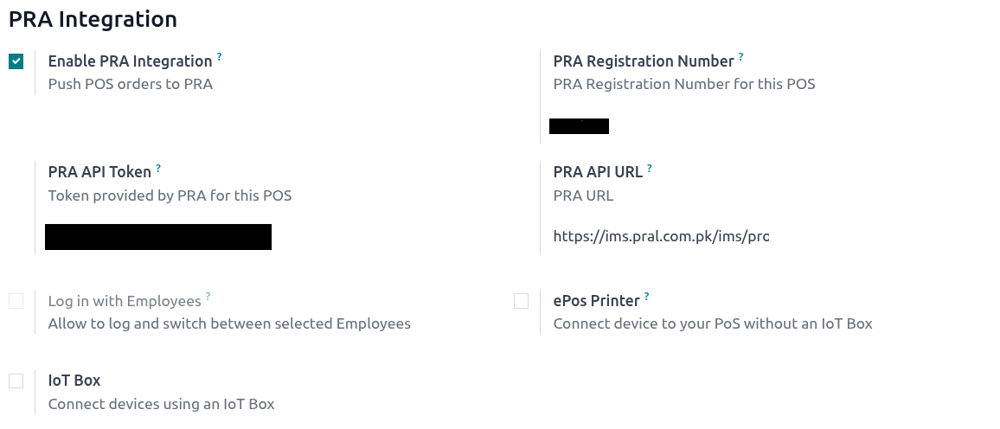

POS-PRA Integration Module
This module allows Odoo POS to integrate with Punjab Regulatory Authority (PRA) for automated
transaction submission and compliance.
1. POS Configuration
To enable integration, you need to configure the POS session with the following fields:
- PRA URL: Enter the official API endpoint provided by PRA.
- Token: Enter your authentication token for API access.
Note: Without a valid URL and Token, the module will not be able to communicate with PRA.
2. Invoice Submission
When a sale is completed on POS, the module automatically sends transaction data to PRA in real-time.
- POS sends invoice details (items, total, date, etc.) to PRA via the configured URL and token.
- PRA responds with an official invoice number.
- The invoice number is printed on the POS receipt for compliance.
3. POS Receipt Example
-----------------------------
Your Store Name
-----------------------------
Item 1 100 PKR
Item 2 50 PKR
-----------------------------
Total: 150 PKR
-----------------------------
PRA Invoice #: PRA-123456789
-----------------------------
4. Usage – POS Configuration Screen
- Go to Point of Sale → Configuration → Point of Sale.
- Open the POS configuration you are using.
- Locate the PRA Integration section.
- Enter the PRA URL and Token.
- Save the configuration.

5. Features
- Automatic real-time submission to PRA.
- POS receipt shows official PRA invoice number.
- Error handling and logging for failed submissions.
- Easy configuration inside POS settings.
6. Notes
- Ensure internet connectivity for real-time submission.
- Use the official PRA credentials only.
- The module works with Odoo POS 15+.
7. Support